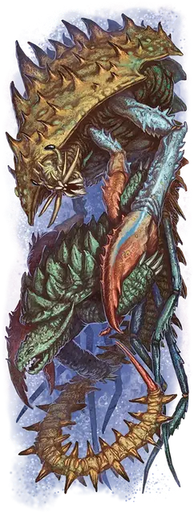

Штормовой краб
Storm Crab
Громадный Монстр, без мировоззрения

Класс Доспеха 18 (природный доспех)
Хиты 155 (10к20 + 50)
Скорость 40 футов, плавая 60 футов
| мод | спас | ||
|---|---|---|---|
| СИЛ | 23 | +6 | +10 |
| ЛОВ | 10 | +0 | +0 |
| ТЕЛ | 21 | +5 | +9 |
| мод | спас | ||
|---|---|---|---|
| ИНТ | 5 | −3 | −3 |
| МДР | 14 | +2 | +2 |
| ХАР | 9 | −1 | −1 |
Навыки Восприятие +6
Сопротивление урону огонь, холод, электричество
Чувства слепое зрение 60 футов, пассивное Восприятие 16
Языки Великаний (понимает, но не говорит)
Опасность 11 (7200 опыта)
Бонус мастерства +4
Особенности
Амфибия. Краб может дышать и воздухом и под водой.
Действия
Мультиатака. Краб совершает две атаки Клешнёй и одну атаку Жалом.
Клешня. . Рукопашная атака оружием: +10 к попаданию, досягаемость 15 футов, одна цель. Попадание: 19 (3к8 + 6) дробящего урона. Если цель - существо Огромного размера или меньше, то цель становится схваченной (Сл высвобождения 16). У краба четыре клешни, и каждая может держать по одной цели.
Жало. . Рукопашная атака оружием: +10 к попаданию, досягаемость 10 футов, одно существо. Попадание: 22 (3к10 + 6) колющего урона, и цель должна преуспеть в спасброске Телосложения Сл 17, иначе она станет отравленной и парализованной на 1 минуту. Пораженное существо может повторять спасбросок в конце каждого своего хода, в случае успеха оканчивая на себе оба эффекта.
Струя воды (перезарядка 5-6). Краб выпускает воду по 150-футовой линии шириной 10 футов. Каждое существо в этой области должно совершить спасбросок Ловкости Сл 17. В случае провала существо получает 27 (6к8) дробящего урона, его отбрасывает на 30 футов от краба, и оно падает ничком. В случае успеха существо получает половину этого урона.
Описание
Учитывая всех странных существ, что обитают в океанских глубинах, кто я такой, чтобы жаловаться на колоссального краба с ядовитым жалом, который может сбить вас с ног струей воды под давлением?
- Бигби
Штормовые крабы - колоссальные ракообразные с четырьмя чудовищными клешнями и ядовитым жалом. Одинаково искусные как под водой, так и на берегу, они могут выпускать струю воды под давлением, чтобы сокрушать врагов.
Великаны в некоторых мирах утверждают, что Стронмаус или один из его детей создали штормовых крабов в первые годы существования древней империи. Точно так же, как бехиры [behir] были созданы для борьбы с драконами на суше, а рух [roc]- для того, чтобы бросить вызов господству драконов в небе, штормовые крабы предназначались для борьбы с дракочерепахами [dragon turtle], бронзовыми драконами и другими водными врагами. Во многих мирах эти существа яростно охраняют подводные крепости штормовых великанов, а также разрушенные крепости, покинутые великанами.